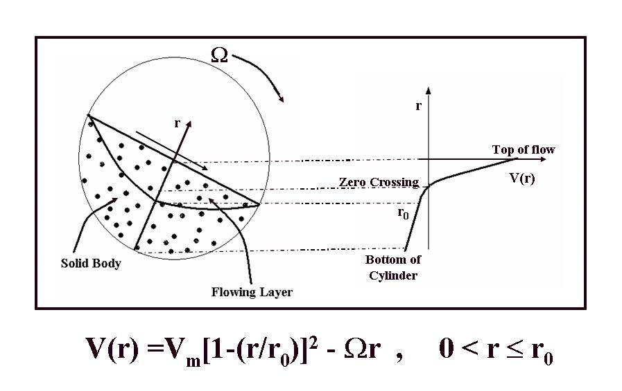
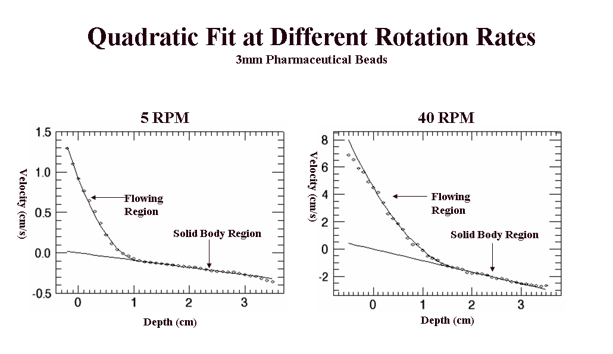
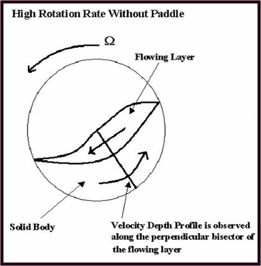
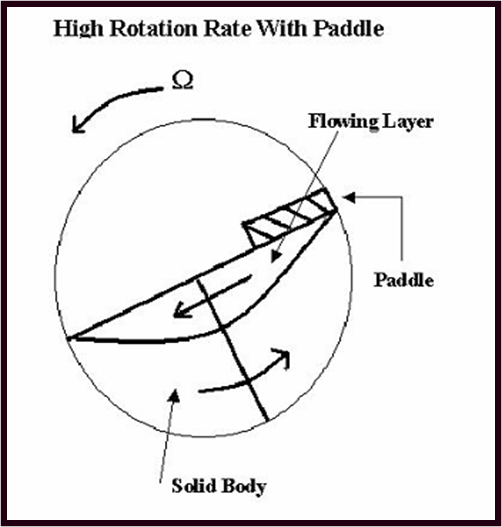
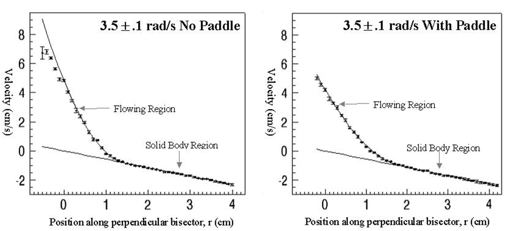

Using MRI to Determine the Velocity Depth Profile of Granular Materials in the Horizontal Rotating Cylinder
Using appropriate oil-filled beads we are able to use liquid-phase MRI to
detect locations as well as quantitative flow characteristics of granular materials.
Quadratic velocity depth profile in the flowing layer in the rotating drum was observed by Nakagawa, et al. (1997), using MRI at New Mexico Resonance.
This is consistent with an energy dissipation minimization of dE/dt α ∫ (dv/dr)2 dr.

However, other researchers measure a linear velocity depth profile - how can we reconcile this descrepancy?
|
Look to what is happening near the surface of flow at different rotation rates:

We find an excellent fit to a quadratic at low rotation rates but a deviation from the quadratic fit at higer rotation rates.
|
Why Does Quadratic Fit Fail at Higher Rotation Rates?
At higher rotation rates particles emerging from the rigid body layer have components of
their velocity directed perpendicular to flow and may become airborne or “float” on the surface.


Can we recover the quadratic fit by adding a paddle to prevent particles from leaving the surace as they emerge from the soild body layer?
|
Yes!

With the addition of a paddle to prevent the
particles from leaving the free surface even rotation rates of 40 rpm
recover a quadratic velocity depth profile.
The quadratic function observed offers an attractive alternative to a
hybrid of two straight lines joined by a transition region. The hybrid works well for
flows at moderately fast rotation rates (without a paddle) because in such cases the
particles near the free surface slow down compared to the quadratic, accidentally making
the velocity dependence appear linear. However, as the rotation rate is increased more
the velocity profile continues to deviate further from the quadratic function, eventually
bending over as the highest particles begin to flow slower than those beneath.
This result strongly
suggests that a quadratic velocity depth profile may be a fundamental property of
granular shear flows in horizontal rotating cylinders when the effect of the cylinder
rotation is to transport the particles from the end of the flow to the beginning
without imparting velocity perpendicular to the free surface flow of the particles upon
reaching the flowing layer.
|
REFERENCES:
Sanfratello, L., Caprihan, A., Fukushima, E.
Velocity depth profile of granular matter in a horizontal rotating drum
(2007) Granular Matter, 9 (1-2), pp. 1-6.
M. Nakagawa, S. A. Altobelli, A. Caprihan, and E. Fukushima, "NMR
measurement and approximate derivation of the velocity depth-profile
of granular flow in a rotating, partially filled, horizontal cylinder," in
Powders and Grains 97, Proceedings of the Third International Conference on
Powders & Grains, edited by R. P. Behringer and J. T. Jenkins
(A. A. Balkema, Rotterdam, 1997); pp. 447-450.
Last Updated: 12:03 PM 5/14/2008